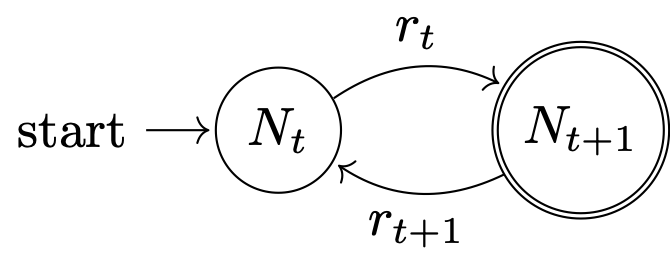

The Italian biologist Humberto D’Ancona noted that during the first World War, the composition of fish in the markets around the Adriatic Sea changed substantially. During the war, the percentage of predatory fish for sale in the markets of Trieste, Fiume, and Venice increased. D’Ancona had no explanation for this and approached his father-in-law, the eminent mathematician Vito Volterra, with the riddle. Volterra’s solution forms the foundation for nearly all subsequent theory regarding the interaction of species within communities. The great American biologist and demographer, Alfred Lotka, developed the same framework about the same time and the equations have since been known as the Lotka-Volterra model for predatory/prey dynamics.
The classical theory of species interactions is attributable to Alfred Lotka and Vito Volterra Reduce communities to a single consumer-resource relationship – typically between a primary consumer (i.e., a herbivore) and a secondary consumer (i.e., a carnivore)
Assumptions of Lotka-Volterra Model: 1. in the absence of a predator, the prey population increases exponentially 2. in the absence of prey, the predator population decays exponentially 3. per capita rate of kill a linear function of prey density 4. each kill contributes equally to predator growth
We can write the equations for the predator-prey model that encapsulates these assumptions.
\[
\begin{align}
\dot{x}_1 &= x_1 (r_1 - a_{12} x_2) \\
\dot{x}_2 &= x_2 (-r_2 + a_{21} x_1)
\end{align}
\] Here, we have used the notation that \(\dot{x} \equiv dx/dt\). That is the dotted variable represents a time derivative. The prey population is \(x_1\) and its growth rate is \(r_1\). Similarly, the predator population is \(x_2\) and its growth rate is \(r_2\). The parameters \(a_{ij}\) are interaction terms, where \(a_{12}\) is the impact that predators have on the growth rate of the prey population and \(a_{21}\) is the rate a which prey are converted into more predators. Note that in the absence of predator/prey, the solutions to the two equations are exponential increase/decay as per assumptions 1 and 2 above.
We can use the R package deSolve to numerically integrate these equations, plot the solutions, etc.
Time series of the two-species Lotka-Volterra system.
And the phase portrait, which takes out the middle man, as it were (i.e., time).
#Phase Portraitwith(out1, plot(x1, x2, type="l", col="magenta", lwd=3, xlab="Prey Population Size", ylab="Predator Population Size",xlim=c(0,90), ylim=c(0,20)))
It just keeps cycling…
The canonical model of lynxes and hares, the Lotka-Volterra predator-prey model shows clock-like regularity. Usually presented as an endlessly-cycling time series, but I think it’s more useful to show the phase portrait, where the abundances of the predator are plotted directly against the abundances of the prey, rather than both of the against time.
Hastings and Powell (1991) took the standard Lotka-Volterra model and added a third species. They used biologically realistic parameter values for a three-level food web. Chaos ensued (literally).
Feedback is when the output of a system becomes the input for future iteration. Feedback systems can greatly complicated the analysis (and meaning) of cause and effect. Feedback is the foundation of complex systems. Feedback is necessarily nonlinear.
There are two broad categories of feedback. Negative Feedback is self-regulatory. Examples include thermostats, insulin-glucagon regulation of blood glucose, logistic growth. Positive Feedback is runaway. Examples include: nuclear fission, economic cycles, lactation, human capital. When you have positive feedback, small disturbances will grow. Another way to describe positive feedback is to say that it is in phase with inputs.

A feedback loop.
More…
6.2 Complex Systems
Collection of interacting units bound together through feedback (coupling) Complex systems lie at the boundary between perfect order and perfect disorder A Complex Adaptive System (CAS) is a subset of a complex system in which there is the capacity for learning and adaptation
Complex systems generally have many connections between elements (i.e., coupling) Many complex systems are characterized by nonlinear change (e.g., competition, predation, mobility, economic production, epidemic models) These can make prediction and management difficult Just because things vary, doesn’t mean anything is wrong This is what we expect of complex systems – not simple equilibria
A nice illustration of the sensitivity to initial conditions comes from May (1976). logistic map is a discrete-time model for population dynamics. It’s a simple equation that can lead to some very complex dynamics.
6.2.1 Sensitivity to Initial Conditions
Consider the plot below inspired by the work of May (1973). Plot time series for a logistic map where the growth rate is in the chaotic region (\(a=3.8284\)). The logistic map is a nonlinear difference equation. It is a discrete-time popualtion model that takes the form,
\[ x_{t+1} = a x_t (1-x_t). \] We start the two populations from barely different initial conditions \(x_0=0.2\) vs. \(x_0=0.20001\).
## logistic mapf <-expression(a*x*(1-x))## every integer period cyclea <-3.8284xx <- (0.2)x <- xxfor(t in1:200){ x <-eval(f) xx <-c(xx,x)}## just barely different initial conditionsxx1 <- (0.20001)x <- xx1for(t in1:200){ x <-eval(f) xx1 <-c(xx1,x)}plot(0:200,xx,type="l", xlab="Time", ylab="X", lwd=1, ylim=c(0,1.1), col="blue")lines(0:200,xx1, lty=1, lwd=1, col="red")
Pretty wild. Two populations that differ initially by just \(1 \times 10^{-5}\) take totally different trajectories when the same population model is applied to them. This is the essence of sensitivity to initial conditions.
6.2.2 Equilibria and Attractors
Supply is upward-sloping. When the price increases, producers have more incentive to increase supply. Similarly, as the price is high, there isn’t much demand from consumers, so it is downward-sloping.
The classic equilibrium is a single point as seen in the ubiquitous model for a competitive equilibrium price in economics.
Is it just me or are the axes on this classic models reversed from what we would expect in science? The quantity (either supplied or demanded) is responding to price, which suggests that Quantity is the dependent variable and should be on the y-axis.
The ESSs for the frequency-dependent models discussed in Chapter 4 have this form too.
An attractor is a generalization of the idea of an equilibrium In essence, an attractor is just a set of points to which a dynamical system tends to evolve from a wide range of initial conditions A basin of attraction is a region in the phase space where once the system is in that region, it will end up on the attractor
Hysteresis.
Hysteresis is simply the dependence of the state of a system on its history It’s one important form a path-dependence Appreciation of the dollar and factory closures Scheffer and Carpenter (2003) use a slightly different meaning: Multiple states persisting under the same environmental conditions Basically, synonymous with alternative stable states
deMenocal et al. (2000) provide an example of a sudden shift in a stable state.
A system has alternative attractors if there can be more than one stable state for the same values of external conditions (Scheffer and Carpenter 2003)
This is known as a “production function” or “recruitment function.” It tells you how big a change in a population will be next year based on its size this year (e.g., how many “recruits”). They are typically humped, where the number of recruits is very small at either very low population densities or near carrying capacity. Sometimes, they’re not humped when density-dependence is weak or absent, but usually they are humped, often asymmetrically.
This is the Holling Type II Functional Response (yes, that Holling). It is a saturating function. For a fixed number of predators, the number of prey they take (their “attack rate”) will increase with the prey density, but it will saturate. You can only eat so much.
Now, suppose there is population growth of the predators/consumers. What’s going to happen to this curve? Well, it will shift upward because there are more consumers so the rate at which they remove prey will be higher.
The growth of the consumers is typically very slow relative to the recruitment of the producer population. It’s not hard to imagine a series of functional-response curves sweeping upward gradually as the population of consumers increases.
In this figure, the humped recruitment curve is intersected by a nonlinear extraction curve. Harvesting effort increases as the resource population increases, but it does so in a decelerating manner. In this particular curve, extraction also accelerates for the lowest levels of the resource population. The shapes of these curves (which are pretty standard models for resource-extraction known as “functional response” curves) mean that they hit the recruitment function in three places each. Equilibria occur at three points: near zero, middle producer density, and high producer density. The green points (high consumer density) are stable equilibria – the movement of perturbations on this side of the curve is indicated by the grey arrows at the top. The red points are unstable (note the grey arrows). Depending on the size and direction of a perturbation from this point in the system, the productivity can easily be knocked down to the catastrophic equilibrium of extremely low productivity. Note that the fold catastrophe also has three equilibria for any set of conditions (except the special cases of the folds).
Note that each harvest curve produces 3 equilibria: the green ones are stable, the red ones are unstable, and the unmarked ones near zero turn out also to be stable (just not marked because the dots would get crowded down there).
This is what we could call “forcing.” It’s a slow change—in a specific direction—that gradually changes the state of the system overall. Slow forcing ultimately produces catastrophes.
If we perform the forcing of a functional-response curve on that hump-shaped recruitment curve, collect the three stable points for each changing functional-response curve, and plot those, we get something that looks like this. The stable points are the solid lines of the attractor. The unstable points are the dotted line. This model was developed by Noy-Meir (1975).
If we trace a series of curves moving from low to high exploitation like the two intersecting functional responses in this figure, what we end up with is an attractor that looks very much like the fold-catastrophe. This doesn’t actually seem that exotic after all.
In high-sensitivity environments like a semi-desert or the Arctic, the extent of human exploitation is very likely near the maximum sustainable level. If environmental productivity were to decline as a function of climate change, while the extent of exploitation remains constant, the system can be pushed into catastrophic regime-shift.
The the system state approaches the fold, the derivative of the attractor goes infinite. This means that perturbations on or very near the fold can lead the system to change wildly, potentially entering a new (and worse) basin of attraction – in this case, the lower branch of the attractor.
It resurfaced in the work of Carpenter, Scheffer, and their collaborators. Scheffer et al. (2009) use the fold-catastrophe model extensively in their work on predicting catastrophes.
Solid lines indicate stable attractor. Perturbations tend to return. Dashed lines indicate unstable attractor: perturbations tend to move away from attractor. There are thus two basins of attraction.
When you approach the fold (point F1), a small perturbation can push you from the stable to unstable branch quite easily. Then, if there is another perturbation below the attractor, the system state can move rapidly down to the bad stable branch (F2).
A catastrophe is a sudden shift given a small perturbation.
The solid parts of the curve are stable—when the system state is perturbed when in the vicinity of this part of the attractor, it tends to return, as indicated by the grey arrows pointing back to the attractor. The dashed part of the attractor is unstable—perturbations in this neighborhood tend to move away from the attractor. This graphical representation of the system makes it pretty easy to see how a small perturbation could dramatically change the system if the current combination of conditions and system state place the system on the attractor near the neighborhood where the attractor changes from stable to unstable. The figure illustrates one such scenario. The conditions/system state start at point F1. A small forcing perturbs the system off this point across the bifurcation. Further forcing now moves the system way off the current state to some new, far away, stable state. We go from a very high value of the system state to a very low value with only a very small change in conditions. Indeed, in this figure, the conditions remain constant from point F1 to the new value indicated by the white point—just a brief perturbation was sufficient to cause the drastic change.
At the fold, the derivative disappears (the derivative of a vertical line is undefined). This means that a perturbation that happens at a fold can lead to the system wandering well away from its local attractor.
Note that for most environmental conditions, there are three equilibria. Two of these are stable and one is unstable. One of the stable equilibria is in the good range of the system state. Specific examples might include high biomass or population size of a resource species, high forest cover, or clear water. One of the stable equilibria is in the bad range of the conditions such as low population density or biomass, deforested, or turbid water. The third equilibrium is intermediate, but it is unstable. When the system moves to that part of the attractor, perturbations will tend to move the system away to one of the stable parts of the attractor.
6.3 Hysteresis
Another notable feature of the fold-catastrophe model is known as hysteresis or path-dependency. Suppose that the system has been forced through point F2 to the fold and then a perturbation has driven it to the bad stable state of F1. Suppose also that, having witnessed the dramatic collapse of the system, people decided to do something to try to bring back the biological functionality. The problem is that shape of the attractor means that it will take an enormous investment to get the system back to its healthy state. In effect, the system needs to be forced back up the attractor toward the left-facing fold. Once there, it is possible to shock the system back up to the healthy (stable) leg of attractor, but in order to get it to this point, the system needs to nearly be brought back to its initial state.
Forced to the fold; drive to the bad state.
A catastrophe only happens when the attractor folds back on itself. A system can change by a large amount and not experience a catastrophe. This can happen because either there is a region of the attractor that has very high sensitivity or because the perturbation is just very large.
library(shape)logist <-function(x,a,b) 1/(1+exp(-(a+b*x)))x <-seq(0,20,,200)## need to make a<0 so that whole curve appears# High Sensitivityplot(x,1-logist(x=x,a=-10,b=1), type="l", lwd=3, axes=FALSE,frame=TRUE,xaxs="i",xlab="Conditions", ylab="State")Arrows(8,1-logist(8,a=-10,b=1),11.8,1-logist(8,a=-10,b=1), arr.type ="triangle", arr.length =0.2, lwd=2, col="red")Arrows(12,1-logist(8,a=-10,b=1),12,1-logist(11.9,a=-10,b=1), arr.type ="triangle", arr.length =0.2, lwd=2, col="red")
An important part of this work is that there are signals of catastrophe. Scheffer et al. (2009) argue that there are certain generic features of many systems as they move toward catastrophic change. The paper discusses epileptic seizures, asthma attacks, market collapses, abrupt shifts in oceanic circulation and climate, and ecological catastrophes such as sudden shifts in rangelands, or crashes of fish or wildlife populations. At first, it sounds like the vaguely mystical ideas about transcendent complexity, financial physics, etc. But really, there are a number of very sensible observations about dynamical systems and a convincing argument that these features will be commonly seen in real complex systems.
The basic idea is that there are a number of harbingers of catastrophic change in time series of certain complex systems. As one gets close to a catastrophic bifurcation, the very straightforward analysis that we used for evaluating the stability of the logistic model shows that the rate of return to the attractor decreases. As we move from the upper-left branch of the attractor toward point F2 in the figure, note that the slope of the tangent line at each point gets larger and larger. The slope on these tangent lines tells us about the behavior of the system following a small perturbation. As before, call the slope of these tangent lines \(\lambda\). Perturbations away from the attractor will grow or decay according to the equation \(n(t) = n(0) e^{\lambda t}\), where \(n(t)\) is the size of the perturbation away from the attractor at time \(t\). If external forcing moves the state along the attractor to point \(B\), the slope is infinite (i.e., vertical) and the perturbation will grow rapidly away from the attractor in the direction of the perturbation.
As Scheffer et al. (2009) note, one rarely has the luxury of measuring rates of return to equilibria in real systems but, fortunately, there are relatively easily measured consequences of this slow-down of rates of return to the attractor. They show in a lucid manner how the correlations between consecutive observations in a time series will increase as one approaches one of these catastrophic bifurcation points. This increased correlation has the effect of increasing the variance.
Two ways to diagnose an impending catastrophe in a system that is characterized by the fold bifurcation model are: (1) an increase in variance of the observations in the series and (2) an increase in the lag-1 autocorrelation. A third feature of impending catastrophes does not have quite as intuitive an explanation, but is also relatively straightforward. Dynamical systems approaching a catastrophic bifurcation will exhibit increased skewness to the fluctuations as well as flickering. The skewness means that the distribution of period-to-period fluctuations will become increasingly asymmetric. This has to do with the shape of the underlying attractor and how the values of the system are forced across it. Flickering means that the values will bounce back and forth between two different regimes (say, high and low) rapidly for a period before the catastrophe. This happens when the system is being forced with sufficient strength that it is bounced between two basins of attraction before getting sucked into a new one for good (or at least a long time).
In summary, there are four generic indicators of impending catastrophe in the fold catastrophe model:
Increased variance in the series
Increased autocorrelation
Increased skewness in the distribution of fluctuations
Flickering between two states
These early-warning signs of impending catastrophe are collectively known as the critical-slowing-down hypothesis Scheffer et al. (2012).
In a system characterized by high resilience, a stochastic forcing will be followed by the rapid return to the attractor. As a result, there will be low correlation between subsequent states.
A nice way to visualize this is to imagine a ball rolling on a landscape. We can think of the equilibrium (or “attractor”) as being a valley on the landscape, which we will call the basin of attraction. Pushing the ball toward the basin of attraction will lead to it settling in to the attractor.
Once the ball has settled into this basin of attraction, it is difficult to push it out because the basin is deep and the sides are steep. The red arrows in the following sketch indicate the high-frequency oscillations of the ball in this deep attractor arising from the steep sides. The perturbed ball will rapidly settle back into its attractor following the perturbation.
When the system is low-resilience, it has a longer memory for perturbations and correlations increase. We can visualize this as a flattened-out basin of attraction. The longer red arrows in the sketch below indicate how the same perturbation will cause the ball to roll further – because the sides of the basin are less steep – as it settles back down. This leads to the greater variance and increased temporal autocorrelation predicted by the critical slowing down model of Scheffer et al. (2009).
There are all sorts of worrisome implications in these types of models for climate change, production systems, disease ecology, and the dynamics of endangered species. What I hope is that by really getting a handle on these generic systems, we will develop tools that will help us identify catastrophes soon enough that we might actually be able to do something about some of them. The real challenge, of course, is developing tools that give us the political will to tackle serious problems subject to structural uncertainty. I won’t hold my breath…
All the examples so far of the fold-catastrophe model use generic labels for the axes: “Conditions” and “System State”
What are the “shocks” that knock the system off its attractor? These are brief increases/decreases in either of the conditions or the system state that are exogenous to the system we’re studying. For example, the human population might decrease because there is an epidemic or a war. The temperature might temporarily be decreased because of a volcanic eruption. Forest cover might drop suddenly because there was an earthquake and people cut down more trees to cook and keep warm because they lost gas to their homes. These changes have nothing to do with the specific set of conditions/system state that we’re measuring so they are “exogenous” — they push the value of the system state off the attractor and the system either reverts back to where it was (if the perturbation was in a stable region) or it moves to a new part of the attractor if it was in an unstable region.
Why do we care? 1. possibility for abrupt changes 2. highlights importance of slow dynamics/forcing and relationship to fast dynamics 3. hysteresis should give us all pause
A general phenomenon of a dynamical system approaching catastrophic change is known as Critical Slowing Down Some specific signs from time series: Increased Variance Increased Autocorrelation In addition, warning signs not necessarily related to slowing down Flickering Skewness
Low-resilience leads to high variance in the perturbed state and high temporal autocorrelation of state values.
Try to recreate the analysis of Scheffer and colleagues. The problem is they don’t fully specify the model and certainly don’t share code. This is close (though the non-resilient case is more variable than theirs).
The model they use is for a density-dependent population that experiences harvesting. Density dependence is logistic, while the harvesting rate is governed by a Holling Type III functional response:
\[
\frac{dX}{dt} = X(1 - \frac{X}{K}) - \frac{c X^2}{X^2 + 1}
\] Where \(K\) is the carrying capacity and \(c\) is the maximum (asymptotic) harvest rate. This is essentially the model employed by both Noy-Meir (1975) and May (1977).
## logistic growth with harvestingdX <-function(X,K,c) X*(1- X/K) - c*(X^2/(X^2+1))X0 <-17## high resiliencenmax <-1000X <-rep(0,nmax)## mean-zero normal noiseepsilon <-rnorm(nmax) # normal innovationsX[1] <- X0for(i in2:nmax){ X[i] <- X[i-1] +dX(X[i-1],15,1) + epsilon[i]}# time seriesplot(1:1000,X, type="l", xlab="Time", ylab=expression(X[t]), ylim=c(0,18))
Both the variance and the covariance is greater less-resilient scenario with the high extraction rate. The high-frequency fluctuations are larger, making the variance large. This also makes it take longer for the deviations to to dissipate, so it’s more likely that two consecutive time steps will be above (or below) the average.
The overall lag-1 autocorrelation is significantly higher in this lower-resilience case. Moreover, the lag-2 autocovariance is also significantly greater than zero (indicated by being above the blue dashed line), indicating a much slower decay in the autocovariance.
require(zoo)set.seed(42)## logistic growth with harvestingdX <-function(X,K,c) X*(1- X/K) - c*(X^2/(X^2+1))X0 <-17nmax <-1000ccc <-c(rep(1,100), seq(1,4,,900))X2 <-rep(0,nmax) epsilon <-rnorm(nmax)X2[1] <- X0for(i in2:nmax){ X2[i] <-pmax(X2[i-1] +dX(X2[i-1],15,ccc[i]) + epsilon[i],0)if(X2[i]==0) break# no random resurrection}## index of the extinctionextinct <-min(which(X2==0))plot(1:extinct,X2[1:extinct], type="l", xlab="Time", ylab=expression(X[t]), ylim=c(0,18))
Now look at how the correlations change over time.
require(zoo)## a little function to calculate a rolling autocorrelationgetacf <-function(x) { tmp <-acf(x,lag.max=1,plot=FALSE)return(tmp$acf[2])}aaa <-rollapplyr(X2[1:extinct], 100, getacf)plot(aaa, type="l", xlab="Time", ylab="Autocorrelation")
What happens when a the system is forced onto the unstable part of the attractor? Until it’s pushed over the boundary, it will tend to return the stable arm. If this happens repeatedly, you will see flickering
If one side of the basin is stretched out, making it shallower, the distribution of oscillations will be skewed.
6.4 Stability Analysis of the Lotka-Volterra Model
As we saw in Section 6.0.1, the classic predator-prey model of Lotka and Volterra shows cyclical dynamics. What happens if we perturb the model off of its simplex? Will the system return to the simplex and continue cycling in the same manner as before the perturbation? Will the system diverge, perhaps leading to the extinction of one or both species? We can use stability analysis to investigate these questions. In a nutshell, we use the structural information contained in the equations to investigate whether or not a small perturbation off of the simplex (i.e., the phase portrait) will increase or decay back to the simplex.
First solve the predation equations to find their equilibrium values. Solving the first, we see that there is an equlibrium (i.e., \(\dot{x}_1=0\)) at \(x_1=0\) or, less trivially, \(x_1=b_1/a_{12}\). Solving the second, we similarly find \(x_2=0\) and \(x_2=b_2/a_{21}\). There are thus two equilibria for this model: \((0,0)\) and \((b_1/a_{12}, b_2/a_{21})\).
It doesn’t take too much thought to see that the first of these equilibria is unstable. Since the first term in the model contains an exponential growth term (corresponding to the first assumption), any perturbation away from the zero equilibrium will grow.
The Lotka-Volterra equations are nonlinear – the rate of prey removal and the rate of growth of predators depends on the interaction of the two state variables, \(x_1\) and \(x_2\). To determine the stability of the non-trivial equilibrium, we need to linearize the system around the equilibrium point. That is, we perform a Taylor series expansion of the system around the equilibrium, discarding all higher-order terms (i.e., square and above). For the multivariate system, we use the Jacobian matrix of the system
The latter matrix comes from substituting the equilibrium values for \(x_1\) and \(x_2\) and simplifying.
The stability criterion where a perturbation decays back to the equilibrium translates into all the eigenvalues of \(\mathbf{J}\) having negative real parts. We can calucate the eigenvalues of \(\mathbf{J}\) by solving the characteristic equation \(\det(\mathbf{J} - \lambda \mathbf{I})=0\):
The solution to the characteristic equation is thus \(\lambda = \pm i\sqrt{b_1b_2}\). This solution contains no real parts – i.e., the real parts are zero – only imaginary. This means that the equilibrium is neither stable nor unstable but that the model is purely oscillatory.
6.5 Stability and Complexity
In model ecosystems, the more species the model contains, the less asymptotically stable it is (this results from the requirement that the real parts of all eigenvalues of the Jacobian matrix be negative for stability)
One of the central debates in ecology surrounds the problem of stability and complexity. Biological intuition suggests that more complex ecosystems are more stable. More species should lead to greater functional redundancy, e.g., leading to greater resilience. Simple experiments support this intuition refs. Elton: “simple communities were more easily upset than that of richer ones; that is, more subject to destructive oscillations in populations, and more vulnerable to invasions”
In his foundational (1973) monograph, Robert May noted that the mathematical theory of community ecology did something very odd. May (1973) shows that the standard, off-the-shelf mathematics of stability analysis say that increased food web complexity actually leads to lower stability! This prediction was odd because it violated the intuitions of most field ecologists, who felt that more complex communities were more stable. Surely, with more species in a given community, there should be greater functional redundancy which, in turn, should make complex communities robust to perturbations—really the definition of stability.
How did this work? First, linearize the model around the equilibrium vector:
\[ \dot{\mathbf{u}} = \mathbf{A} \mathbf{u}, \]
where \(\mathbf{u}\) is a vector of length \(k\) of deviations of the populations from their equilibria, i.e., \(u_i = x_i - x^*_i\), where \(x^*_i\) is the equilibrium value for species \(i\).
For the equilibrium to be stable, all the eigenvalues of matrix\(\mathbf{A}\) msut have negative real parts. If all of the eigenvalues of \(\mathbf{A}\) have negative real parts, it means that all the perturbations away from the equilibrium, \(\mathbf{u}\), will decay exponentially back toward the equilibrium. Were any of the eigenvalues non-negative, perturbations would grow and the equilibrium would be, by definition, unstable.
May (1973) showed that as \(k\) gets larger (i.e., the number of species in a community increases), the likelihood that all the eigenvalues of \(\mathbf{A}\) will be negative decreases.
How do we reconcile this mathematical fact with the very strong intuition that more complex ecological systems are more stable? Some clues:
May (1973) used random values for the interaction strengths for the community matrix. Yodzis (1981) found that food webs constructed from real interaction data were more stable than randomly-assembled food webs. Moreover, he found that interaction strengths were often weaker than the random-interaction models, such as those used by May (1973). Pimm and Lawton (1978) found that empirical food webs with omnivores were more stable than those without. Omnivores, by spreading their consumption out over a large range of prey types, generally have weak ecological interactions with other species. McCann, Hastings, and Huxel (1998) showed formally that the key to stability was many weak connections in food webs.
Lotka-Volterra cycles because of the over-shooting of a tightly-coupled system. Omnivores are generalists, which means they have low interaction strengths with their different prey. We can summarize the feature of food webs that promote stability. These include:
Many connections
Low average interaction strength
Prey switching/omnivory
Negative covariance between abundances
Negative covariance stabilizes abundance. The variance of productivity of two species (a and b) follows from the definition of variance
\[
s_{(a+b)}^2=s_a^2+s_b^2+2 \operatorname{cov}(a, b)
\]
It is the sum of the individual variances plus twice the covariance between them. If \(a\) and \(b\) are positively correlated the variance of their sum will exceed the sum of their individual variances. Not exactly the behavior you want in a portfolio!
Hunter-gatherers are generalists, omnivores who engage in extensive prey-switching. Dunne et al. (2016) show that human foragers are what they call “super-generalist and highly-omnivorous consumers” who actually have substantial stabilizing effects on marine and coastal food webs in the Aleutian Islands. Crabtree, Bird, and Bird (2019) suggest that Martu hunter-gatherers were “knitters” of food webs in the Western Desert of Australia and that food webs lost substantial complexity when the Martu were forced off their land and foraging way of life.
Food items are ranked in quality (lower is better). E/h is the net energy that an item yields. E/t is energy gained per unit of search time. The optimal diet includes all items in the diet more highly ranked than where these lines intersect (MacArthur and Pianka 1966).
Fallback Foods: Increased diet breadth. In a bad year, you search longer so the net energy per time spent searching is lower. This moves the equilibrium out and you add more items to the diet.
Vulnerability the susceptibility of a system to disturbances from perturbations, sensitivity to perturbations, and the capacity to adapt Adaptation (small-a) reduction vulnerability Resiliency “the capacity of a system to absorb disturbance and reorganize while undergoing change so as to still retain essentially the same function, structure, identity, and feedbacks” (Walker et al. 2007) cf. ‘time to return to equilibrium following perturbation’
An obvious example of panarchy — specifically cross-scale interactions — is a federal system of government. There are interactions between cities/counties/municipalities at the lowest level, states at the intermediate level, and the federal government at the top level.
The economic/social resilience of Rust-Belt city is likely to be affected by federal assistance programs, which are typically brokered by the states. For example, a state that refuses Medicare expansion affects the resilience of a small county hospital in a poor area where many people are uninsured.
The Adaptive cycle is similar to the model for the collapse of complex societies proposed by Tainter (1988). Societies gain complexity as they solve problems. There comes a point where the diminishing marginal returns to added complexity get so great that added complexity comes at a cost (note that after the peak, it’s no longer simply diminishing marginal returns, but diminishing returns period). This is quite similar to the idea of crystallization in the adaptive cycle. We can model this using the function described in Leslie and Winterhalder (2002).
Crabtree, Stefani A., Douglas W. Bird, and Rebecca Bliege Bird. 2019. “Subsistence Transitions and the Simplification of Ecological Networks in the Western Desert of Australia.”Human Ecology 47 (2): 165–77. https://doi.org/10.1007/s10745-019-0053-z.
deMenocal, Peter, Joseph Ortiz, Tom Guilderson, Jess Adkins, Michael Sarnthein, Linda Baker, and Martha Yarusinsky. 2000. “Abrupt Onset and Termination of the African Humid Period: Rapid Climate Responses to Gradual Insolation Forcing.”Quaternary Science Reviews 19 (1): 347–61. https://doi.org/10.1016/S0277-3791(99)00081-5.
Dunne, Jennifer A., Herbert Maschner, Matthew W. Betts, Nancy Huntly, Roly Russell, Richard J. Williams, and Spencer A. Wood. 2016. “The Roles and Impacts of Human Hunter-Gatherers in North Pacific Marine Food Webs.”Scientific Reports 6 (1): 21179. https://doi.org/10.1038/srep21179.
Guttal, Vishwesha, and Ciriyam Jayaprakash. 2008. “Changing Skewness: An Early Warning Signal of Regime Shifts in Ecosystems.”Ecology Letters 11 (5): 450–60. https://doi.org/10.1111/j.1461-0248.2008.01160.x.
Hastings, Alan, and Thomas Powell. 1991. “Chaos in a Three-Species Food Chain.”Ecology 72 (3): 896–903. https://doi.org/10.2307/1940591.
Leslie, P., and B. Winterhalder. 2002. “Demographic Consequences of Unpredictability in Fertility Outcomes.”American Journal of Human Biology 14 (2): 168–83. https://doi.org/10.1002/ajhb.10044.
MacArthur, Robert H., and Eric R. Pianka. 1966. “On Optimal Use of a Patchy Environment.”The American Naturalist 100 (916): 603–9. http://www.jstor.org/stable/2459298.
May, R. M. 1973. Stability and Complexity in Model Ecosystems. Princeton: Princeton University Press.
———. 1976. “Simple Mathematical-Models with Very Complicated Dynamics.”Nature 261 (5560): 459–67. https://doi.org/10.1038/261459a0.
———. 1977. “Thresholds and Breakpoints in Ecosystems with a Multiplicity of Stable States.”Nature 269 (5628): 471–77. https://doi.org/10.1038/269471a0.
McCann, K., A. Hastings, and G. R. Huxel. 1998. “Weak Trophic Interactions and the Balance of Nature.”Nature 395: 794–98. https://doi.org/10.1038/27427.
Noy-Meir, Imanuel. 1975. “Stability of Grazing Systems: An Application of Predator-Prey Graphs.”Journal of Ecology 63 (2): 459–81. https://doi.org/10.2307/2258730.
Pimm, S. L., and J. H. Lawton. 1978. “On Feeding on More Than One Trophic Level.”Nature 275: 542–44. https://doi.org/10.1038/275542a0.
Scheffer, M., J. Bascompte, W. A. Brock, V. Brovkin, S. R. Carpenter, V. Dakos, H. Held, E. H. van Nes, M. Rietkerk, and G. Sugihara. 2009. “Early-Warning Signals for Critical Transitions.”Nature 461 (7260): 53–59. https://doi.org/10.1038/nature08227.
Scheffer, M., and S. R. Carpenter. 2003. “Catastrophic Regime Shifts in Ecosystems: Linking Theory to Observation.”Trends in Ecology & Evolution 18 (12): 648–56. https://doi.org/10.1016/j.tree.2003.09.002.
Scheffer, M., S. R. Carpenter, Timothy M. Lenton, J. Bascompte, W. Brock, V. Dakos, J. van de Koppel, et al. 2012. “Anticipating Critical Transitions.”Science 338 (6105): 344–48. https://doi.org/10.1126/science.1225244.